| Picture | Common Name | Scientific Name | Family | Last Seen | Random Comments |
|---|---|---|---|---|---|
 |
Brant 黑雁 | branta bernicla | Waterfowl | June ’25, Malibu CA | can be identified by white neckline |
 |
Canada Goose 加拿大雁 | branta canadensis | Waterfowl | May ’25, Baltimore MD | countless of them in blackwater NWR in January |
 |
Bar-headed Goose 斑头雁 | anser indicus | Waterfowl | Dec ’19, Lhasa Tibet | Seen with ruddy shelduck in the pond behind Potala palace |
| Ruddy Shelduck 赤麻鸭 | tadorna ferruginea | Waterfowl | Dec ’19, Lhasa Tibet | NA | |
| 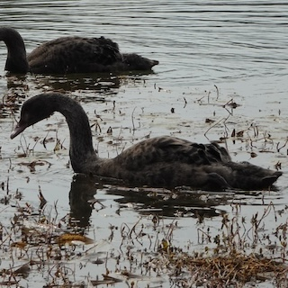 | Black Swan 黑天鹅 | cygnus atratus | Waterfowl | Feb ’23, Suzhou Jiangsu | juvenile |
 |
Tundra Swan 小天鹅  |
cygnus columbianus | Waterfowl | Jan ’25, Cambridge MD | small part of yellow on bills |
| 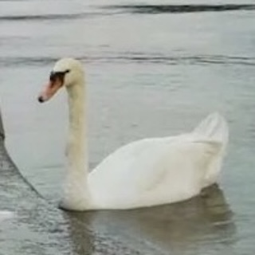 | Mute Swan 疣鼻天鹅 | cygnus olor | Waterfowl | July ’16, Luzern Swiss | NA |
| Mallard 绿头鸭 | anas platyrhynchos | Waterfowl | May ’25, Baltimore MD | sometimes mixed with domestic ducks | |
| Gadwall 赤膀鸭 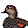 | mareca strepera | Waterfowl | June ’25, Malibu CA | NA | |
| Mandarin Duck 鸳鸯 | aix galericulata | Waterfowl | June ’23, Beijing | juvenile, identified by dotted webbings | |
Red-breasted Merganser 红胸秋沙鸭  |
mergus serrator | Waterfowl | June ’25, Malibu CA | NA | |
 |
Hooded Merganser 棕胁秋沙鸭 | lophydytes cucullatus | Waterfowl | Jan ’25, Cambridge MD | go around in couples |
| Great Cormorant 普通鸬鹚 | phalacrocorax carbo | Cormorants and Anhingas | July ’19, Kyoto Japan | NA | |
 |
Double-crested Cormorant 角鸬鹚 | nannopterum auritum | Cormorants and Anhingas | June ’25, Malibu CA | flying across inner harbor |
| NA | Brandt’s Cormorant 加州鸬鹚 | urile penicillatus | Cormorants and Anhingas | July ’24, Cannon Beach OR | NA |
 |
Little Grebe 小䴙䴘 | tachybaptus ruficollis | Grebes | Feb ’23, Suzhou Jiangsu | called ‘little PT’ in Chinese birding community - too hard to write |
| NA | Tufted Puffin 花魁鸟 | fratercula cirrhata | Alcids | July ’24, Cannon Beach OR | NA |
| Common Murre 崖海鸦 | uria aalge | Alcids | July ’24, Cannon Beach OR | NA | |
| American White Pelican 美洲鹈鹕 | pelecanus erythrorhynchos | Pelicans | Apr ’25, West Lafayette IN | NA | |
 |
Brown Pelican 褐鹈鹕 | pelecanus occidentalis | Pelicans | June ’25, Malibu CA | NA |
| American Herring Gull 美洲银鸥 | larus smithsonianus | Gulls, Terns, Skimmers | Jan ’24, New York NY | winter coat | |
 |
Laughing Gull 笑鸥 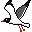 | leucophaeus atricilla | Gulls, Terns, Skimmers | Oct ’23, Baltimore MD | winter coat |
| 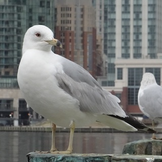 | Ring-billed Gull 环嘴鸥 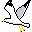 | larus delawarensis | Gulls, Terns, Skimmers | May ’25, Baltimore MD | NA |
 |
California Gull 加州鸥 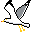 | larus californicus | Gulls, Terns, Skimmers | July ’24, Cannon Beach OR | NA |
| Western Gull 西美鸥 | larus occidentals | Gulls, Terns, Skimmers | June ’25, Santa Monica CA | dark grey back | |
| Glaucous-winged Gull 灰翅鸥 | larus glaucescens | Gulls, Terns, Skimmers | July ’24, Seattle WA | juveniles were seen eating a starfish - sadly they failed. | |
| Yellow-legged Gull 黄腿银鸥 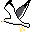 | larus michahellis | Gulls, Terns, Skimmers | July ’16, Venice Italy | NA | |
| Least Tern 普通燕鸥 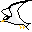 | sternula antillarum | Gulls, Terns, Skimmers | Apr ’25, Cambridge MD | fall straight from the sky to catch fishes | |
| Caspian Tern 红嘴巨燕鸥 | hydroprogne caspia | Gulls, Terns, Skimmers | July ’24, Seattle WA | NA | |
 |
Whiskered Tern 须浮鸥 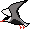 | chlidonias hybrida | Gulls, Terns, Skimmers | Aug ’22, Suzhou Jiangsu | NA |
 |
Killdeer 双领鸻 | charadrius vociferus | Shorebirds | Jan ’25, Cambridge MD | NA |
 |
Wilson’s Snipe 美洲沙锥 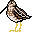 | gallinago delicata | Shorebirds | Jan ’25, Cambridge MD | NA |
| Lesser Yellowlegs 小黄脚鹬 | tringa flavipes | Shorebirds | Apr ’25, Cambridge MD | long bill and long legs | |
| Dunlin 黑腹滨鹬 | calidris alpina | Shorebirds | Apr ’25, Cambridge MD | medium sized shorebird with a distinguishable black belly when breeding | |
| 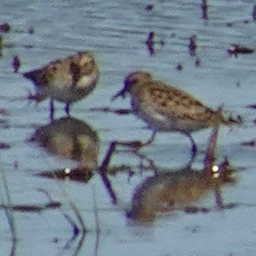 | Least Sandpiper 美洲小滨鹬 | calidris minutilla | Shorebirds | Apr ’25, Cambridge MD | very small, appear in flocks |
| NA | Black-Crowned Night Heron 夜鹭 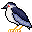 | nycticorax nycticorax | Herons, Ibis, and allies | June ’25, Shanghai | countless near Suzhou River |
| Green Heron 美洲绿鹭 | butorides virescens | Herons, Ibis, and allies | May ’25, Baltimore MD | hiding in reeds | |
| Gray Heron 苍鹭 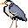 | ardea cinerea | Herons, Ibis, and allies | July ’19, Kyoto Japan | NA | |
| Great Blue Heron 大蓝鹭 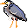 | ardea herodias | Herons, Ibis, and allies | Apr ’25, Cambridge MD | kinda everywhere | |
| Snowy Egret 雪鹭 | egretta thula | Herons, Ibis, and allies | June ’25, Malibu CA | catching fish in the waves | |
 |
Little Egret 白鹭 | egretta garzetta | Herons, Ibis, and allies | Nov ’21, Suzhou Jiangsu | NA |
 |
Great Egret 大白鹭 | ardea alba | Herons, Ibis, and allies | Apr ’25, Cambridge MD | NA |
 |
Eurasian Moorhen 黑水鸡 | gallinula chloropus | Rails, Gallinules, and allies | Nov ’21, Suzhou Jiangsu | symbol of DKU community! |
 |
Eurasian Coot 骨顶鸡 | fulica atra | Rails, Gallinules, and allies | Jan ’23, Suzhou Jiangsu | NA |
| NA | American Coot 美洲骨顶 | fulica americana | Rails, Gallinules, and allies | Apr ’25, West Lafayette IN | NA |
| Turkey 火鸡 | meleagris gallopavo | Grouse, Quail, and Allies | May ’25, New York NY | Named ‘Roosey’ | |
| Rock Pigeon 岩鸽 | columbia livia | Pigeons and Doves | Oct ’24, Baltimore MD | NYC pigeons are horribly fat | |
| Spotted Dove 珠颈斑鸠 | spilopelia chinensis | Pigeons and Doves | Nov ’20, Suzhou Jiangsu | dubbed ‘the most delicious friend of hawks’ | |
| 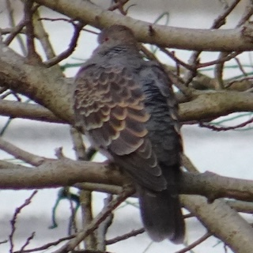 | Oriental Turtle-Dove 山斑鸠 | streptopelia orientalis | Pigeons and Doves | Feb ’23, Suzhou Jiangsu | bronze feathers compared to spotted dove |
| Mourning Dove 哀鸽 | zenaida macroura | Pigeons and Doves | Mar ’25, Baltimore MD | NA | |
 |
Turkey Vulture 红头美洲鹫 | cathartes aura | Vultures, Hawks, and Allies | Jan ’25, Cambridge MD | if you go on a road trip they are always there |
| Osprey 鱼鹰 | pandion haliaetus | Vultures, Hawks, and Allies | Apr ’25, Cambridge MD | somehow chasing a seagull | |
| 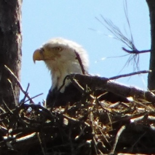 | Bald Eagle 白头海雕 | haliaeetus leucocephalus | Vultures, Hawks, and Allies | Jan ’25, Cambridge MD | can be differentiated from turkey vulture while flying by their white tails |
 |
Red-tailed Hawk 红尾𫛭 | buteo jamaicensis | Vultures, Hawks, and Allies | Jan ’22, Durham NC | NA |
| Tree Swallow 双色树燕 | tachycineta bicolor | Martins and Swallows | Apr ’25, Cambridge MD | small, bright blue under sunlight, white belly | |
 |
Barn Swallow 家燕 | hirundo rustica | Martins and Swallows | May ’25, Washington DC | longer tail |
| Northern Rough-winged Swallow 中北美毛翅燕 | stelgidopteryx serripennis | Martins and Swallows | Apr ’25, Baltimore MD | small, fly very fast, chasing insects near water | |
| 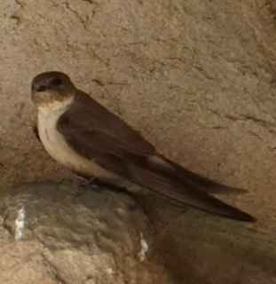 | Eurasian Crag-Martin 岩燕 | ptyonoprogne rupestris | Martins and Swallows | June ’23, Datong Shanxi | NA |
| NA | Common Kingfisher 普通翠鸟 | alcedo atthis | Kingfisher | Dec ’21, Suzhou Jiangsu | NA |
| NA | Eurasian Hoopoe 戴胜 | upupa epops | Hoopoes | Apr ’23, Suzhou Jiangsu | NA |
| Yellow-bellied Sapsucker 黄腹吸汁啄木鸟 | sphyrapicus varius | Woodpeckers | Mar ’25, Baltimore MD | dead due to bird strike | |
| 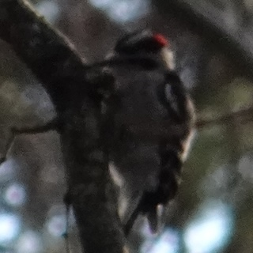 | Downy Woodpecker 绒啄木鸟 | dryobates pubescens | Woodpeckers | Jan ’25, Cambridge MD | very small |
| Blue Jay 冠蓝鸦 | cyanocitta cristata | Jays, Magpies, Crows, Ravens | May ’25, Annapolis MD | only heard them singing. never seen with eyes | |
 |
American Crow 短嘴鸦 | corvus brachyrhynchos | Jays, Magpies, Crows, Ravens | Jan ’25, Baltimore MD | sits on trees of Baltimore in flocks in evenings, esp. from Nov to Feb |
| NA | Fish Crow 鱼鸦 | corvus ossifragus | Jays, Magpies, Crows, Ravens | Apr ’25, Baltimore MD | song is different from american crow - if you ask it will answer with a reluctant ‘uh-uh’ |
| Large-billed Crow 大嘴乌鸦 | corvus macrohynchos | Jays, Magpies, Crows, Ravens | Mar ’23, Lijiang Yunnan | the OG crow in China | |
| Common Raven 渡鸦 | corvus corax | Jays, Magpies, Crows, Ravens | June ’25, Malibu CA | ‘quoth the raven, nevermore’ - quoth someone who died in Baltimore. | |
| Red-billed Blue-Magpie 红嘴蓝鹊 | urocissa erythroryncha | Jays, Magpies, Crows, Ravens | Mar ’23, Lijiang Yunnan | NA | |
 |
Azure-winged Magpie 灰喜鹊 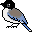 | cyanopica cyanus | Jays, Magpies, Crows, Ravens | Feb ’23, Suzhou Jiangsu | NA |
| Black Phoebe 黑长尾霸鹟 | sayornis nigricans | Tyrant Flycatchers: Pewees, Kingbirds, and Allies | June ’25, Malibu CA | NA | |
| NA | Oriental Magpie-Robin 鹊鸲 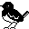 | copsychus saularis | Old World Flycathers | June ’25, Suzhou Jiangsu | NA |
 |
Long-tailed Shrike 棕背伯劳 | lanius schach | Shrikes | Feb ’23, Suzhou Jiangsu | ‘butcher bird’ - in me the tiger sniffs the plum blossoms |
| 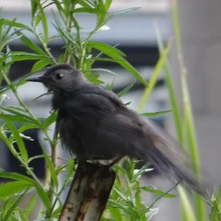 | Gray Catbird 灰猫嘲鸫 | dumetella carolinensis | Catbirds, Mockingbirds, and Thrashers | May ’25, Annaplis MD | little gray bird, usually seen in the evening |
 |
Northern Mockingbird 北嘲鸫 | mimus polyglottos | Catbirds, Mockingbirds, and Thrashers | Apr ’25, Cambridge MD | NA |
| Eastern Bluebird 东蓝鸲 | sialia sialis | Thrushes | Mar ’22, Durham NC | NA | |
| Western Bluebird 西蓝鸲 | sialia mexicana | Thrushes | June ’25, Los Angeles CA | NA | |
 |
Hermit Thrush 隐夜鸫 | catharus guttatus | Thrushes | Jan ’25, Cambridge MD | NA |
| 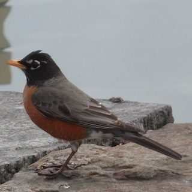 | American Robin 旅鸫 | turdus migratorius | Thrushes | Mar ’24, Baltimore MD | appear in large flocks, arrive in early spring, have a beautiful song |
| NA | Chinese Blackbird 乌鸫 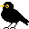 | turdus mandarinus | Thurshes | June ’25, Suzhou Jiangsu | black version robin, so cute!! |
| NA | Light-vented Bulbul 白头鹎 | pycnonotus sinensis | Bulbuls | June ’25, Suzhou Jiangsu | NA |
| White-browed Laughingthrush 白颊噪鹛 | pterohinus sannio | Laughingthrushes and allies | July ’20, Chengdu Sichuan | NA | |
 |
Carolina Chickadee 卡罗莱纳山雀 | poecile carolinensis | Tits, Chickadees, and Titmice | Mar ’22, Durham NC | NA |
| Tufted Titmouse 美洲凤头山雀 | baeolophus bicolor | Tits, Chickadees, and Titmice | Apr ’25, Cambridge MD | small round fluffy ball | |
| 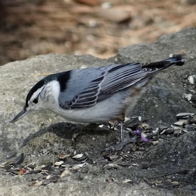 | White-breasted Nuthatch 白胸䴓 | sitta carolinensis | Nuthatches | Mar ’22, Durham NC | NA |
 |
Carolina Wren 卡罗苇鹪鹩 | thryothorus ludovicianus | Wrens | Jan ’25, Cambridge MD | NA |
| Ruby-crowned Kinglet 红冠戴菊 | corthylio calendula | Kinglets | Mar ’22, Durham NC | NA | |
| White Wagtail 白鹡鸰 | motacilla alba | Wagtails and Pipits | Mar ’23, Lijiang Yunnan | tail wags endlessly, and flies in ‘sine function’ | |
 |
Chipping Sparrow 褐斑翅雀鹀 | spizella passerina | New World Sparrows | Apr ’25, Cambridge MD | NA |
 |
White-throated Sparrow 白喉带鹀 | zonotrichia albicollis | New World Sparrows | Oct ’24, Baltimore MD | found dead around MICA, bird strike |
 |
Song Sparrow 歌带鹀 | melospiza melodia | New World Sparrows | June ’25, Los Angeles CA | NA |
| Dark-eyed Junco 暗眼灯草鹀 | junco hyemalis | New World Sparrows | June ’25, Los Angeles CA | NA | |
 |
House Sparrow 家麻雀 | passer domesticus | Old World Sparrows | May ’24, Boston MA | white neckline |
| Eurasian Tree Sparrow 麻雀 | passer montanus | Old World Sparrows | Nov ’19, Suzhou Jiangsu | black cheek | |
 |
House Finch 家朱雀 | haemorhous mexicanus | Finches, Euphonias, and allies | June ’25, Los Angeles CA | very small bird |
 |
American Goldfinch 北美金翅雀 | spinus tristis | Finches, Euphonias, and allies | Apr ’25, Baltimore MD | NA |
| Lesser Goldfinch 暗背金翅雀 | carduelis psaltria | Finches, Euphonias, and allies | June ’25, Los Angeles CA | NA | |
 |
Northern Cardinal 主红雀 | cardinalis cardinalis | Cardinals, Grosbeaks, and allies | Apr ’25, Cambridge MD | cutest and most iconic bird in the u.s.a. |
| Red-winged Blackbird 红翅黑鹂 | agelaius phoeniceus | Blackbirds | Apr ’25, Cambridge MD | have a very loud and distinguishable song | |
 |
Common Grackle 普通拟八哥 | quiscalus quiscula | Blackbirds | May ’24, Boston MA | NA |
| Great-tailed Grackle 大尾拟八哥 | quiscalus mexicanus | Blackbirds | June ’25, Malibu CA | NA | |
| European Starling 紫翅椋鸟 | sturnus vulgaris | Starlings and Mynas | Apr ’25, Cambridge MD | NA | |
| NA | Crested Myna 八哥 | acridotheres cristatellus | Starlings and Mynas | June ’25, Suzhou Jiangsu | NA |
All About Birding
fun
birding
web development

Introduction
I love birding! Welcome to my personal birding records.
You can see birds I’ve sighted all around the world at bird list (including an interactive map) and all my favorite birding destinations at places I went for birding. Links and resources are also provided.
Note: Only wild birds were recorded. All photos taken by me (most with Sony WX800). All pixel arts created by me.
The next bird I want to see is: Pheasant-tailed Jacana 水雉, because it’s beautiful!
Bird List
My Bird List
Now I have spotted 102 birds.
Birding Around the World: Interactive Map
Click on the map to see pictures of birds! Urban sites marked in pink while rural sites marked in green.
Places I Went For Birding
Baltimore, MD: Inner Harbor
{kind=link}
- Type: Urban | Saltwater; Shore
- First Visited: Aug 2023
- Last Visited: Apr 2025
- Birds: Canada Goose, Double-crested Cormorant, Laughing Gull, Mallard, Ring-billed Gull, Rock Pigeon, Osprey, Northern Rough-winged Sparrow, Fish Crow
- Comments: From inner harbor to harbor east and locust point, the waterfront of downtown Baltimore is a great place to watch gulls & various kinds of waterfowls. A large flock of gulls rest in front of the harbors near Whole Foods from late fall to early spring in the evening. Check out the Harbor Connector water taxi - you can see gulls and cormorants flying across the harbor.
- Link: Harbor Connector Water Taxi (free to ride!) | ebird
Baltimore, MD: Patterson Park
{kind=link}
- Type: Urban | Forest, Pond
- First Visited: Mar 2025
- Last Visited: May 2025
- Birds: American Robin, Canada Goose, Mallard, Rock Pigeon, Fish Crow, House Finch, Red-winged Black Bird, Little Blue Heron, House Sparrow, Blue Jay, Mourning Dove
- Comments: The historical park is a great place for birdwatching. If you visit the park at late spring, you can watch flocks of robins, sparrows and blackbirds singing, mallards hanging out, and Canada geese raising their goslings around the pond! They’re not afraid of people and happy to interact with visitors.
- Link: Friends of Patterson Park | ebird
Cambridge, MD: Blackwater National Wildlife Refuge

- Type: Rural | Brackish; Shore, Wetland, Forest
- First Visited: Jan 2025
- Last Visited: Apr 2025
- Birds: Bald Eagle, Canada Goose, Carolina Wren, Downy Woodpecker, Great Blue Heron, Hermit Thrush, Hooded Merganser, Killdeer, Mallard, Northern Cardinal, Northern Mockingbird, Ring-billed Gull, Turkey Vulture, Whistling Swan, Wilson’s Snipe, Osprey, Red-winged blackbird, Chipping Sparrow, Blue Jay, Tufted Titmouse, Tree Swallow, Lesser Yellowlegs, Dunlin, Least Tern, Least Sandpiper, Great Egret
- Comments: A perfect place for birding at the east coast of Chesapeake Bay, the most iconic bird being bald eagle. With woods, trails, wetlands and ponds around the wildlife drive, you can see a variety of birds here. Also, the visitor center’s pick of merchandises is superb.
- Links: Friends of Blackwater check the webcams | U.S. Fish & Wildlife Service: Blackwater National Wildlife Refuge | ebird
New York City, NY: Liberty Island
{kind=link}
- Type: Urban | Saltwater; Island
- First Visited: Jan 2024
- Last Visited: Jan 2024
- Birds: American Herring Gull, Brant, European Starling, Ring-billed Gull
- Comments: While New York City is full of fat pigeons, the liberty island is surprisingly a good place to watch waterfowls, and of course, gulls. Just mind your food, the gulls are really aggressive.
- Link: ebird
Harpers Ferry, WV: Maryland Heights

- Type: Rural | Mountain, River, Stream
- First Visited: Mar 2024
- Last Visited: Mar 2024
- Birds: Canada Goose, Mallard, Great Blue Heron, Turkey Vulture
- Comments: The streams in the woods are a good place to catch up with our geese and heron friends.
- Link: National Park Service: Harpers Ferry | ebird
Durham, NC: Duke University

- Type: Rural | Forest, Pond
- First Visited: Jan 2022
- Last Visited: Jan 2024
- Birds: Red-tailed Hawk, Northern Cardinal, Eastern Bluebird, Carolina Chickadee, American Robin, Carolina Wren, House Finch, Ruby-crowned Kinglet, White-breasted Nuthatch
- Comments: With birdfeeders everywhere, the Sarah P. Duke Garden is a great place for backyard birds like northern cardinal and eastern bluebird. I saw a red-tailed hawk with its nest near the old chemistry building. There are also some exotic waterfowls in the ponds of Duke Garden, like mandarin ducks & ruddy shelducks, you can check the link below.
- Links: Exotic Waterfowls in Duke Garden | Duke Gardens | ebird
Seattle, WA: Discovery Park
{kind=link}
- Type: Rural | Saltwater; Forest, Shore
- First Visited: July 2024
- Last Visited: July 2024
- Birds: Caspian Tern, Glaucous-winged Gull, Great Blue Heron, American Crow
- Comments: With all its natural beauty, the discovery park is a great place to enjoy the views of volcano, forests and sea at once - and of course, gulls.
- Link: Seattle.gov: Discovery Park | ebird
Cannon Beach, OR: Haystack Rock

- Type: Rural | Saltwater; Shore, Cliff
- First Visited: July 2024
- Last Visited: July 2024
- Birds: Brown Pelican, California Gull, Tufted Puffin, Common Murre, Brandt’s Cormorant, American Crow
- Comments: It’s just heaven if you love seabirds and shorebirds - in summer, various birds are nesting on the cliff of haystack rock. Remember to bring your binoculars since there’s a sign saying ‘birds only beyond this point’ - you would not be able to get too close to that rock. The volunteer is very friendly and helpful, and tide pools are also great fun to explore. Also, if you reside in Portland, be sure to check out Powell’s books, it has a great collection of field guides as well as other gems.
- Links: Friends of Haystack Rock check the webcams | U.S. Fish & Wildlife Service: Oregon Islands National Wildlife Refuge | ebird
New Orleans, LA: Maurepas Swamp

- Type: Rural | Saltwater; Swamp
- First Visited: Mar 2022
- Last Visited: Mar 2022
- Birds: Great Egret
- Comments: Went there as a part of swamp tour, feeding alligators and raccoons with marshmallows etc.
- Link: Louisiana Dpt. of Wildlife & Fisheries: Maurepas Swamp | ebird
Los Angeles, CA: Malibu Lagoon
{kind=link}
- Type: Rural | Saltwater; Lagoon, Shore
- First Visited: June 2025
- Last Visited: June 2025
- Birds: Common Raven, Red-breasted Merganser, Great-tailed Grackle, Snowy Egret, Black Phoebe, Gadwall, Western Gull, Canadian Goose, Brant, Mallard, Brown Pelican, Double-Crested Cormorant
- Comments: Famous for surfing but the lagoon has striking biodiversity. Mixed groups of brown pelicans and double-crested cormorants fishing in the lagoon.
- Link: California State Parks: Malibu Lagoon State Beach | eBird
Links & Resources
General Recourses
Get Involved! Local Birding Communities
Baltimore/Maryland
End Notes
{kind=link}
Thanks Qinyi who introduced me to the world of birding. I will always remember watching night heron with you sitting next to Bixia Pond back in 2019 in the afternoon before taking a Biology exam.